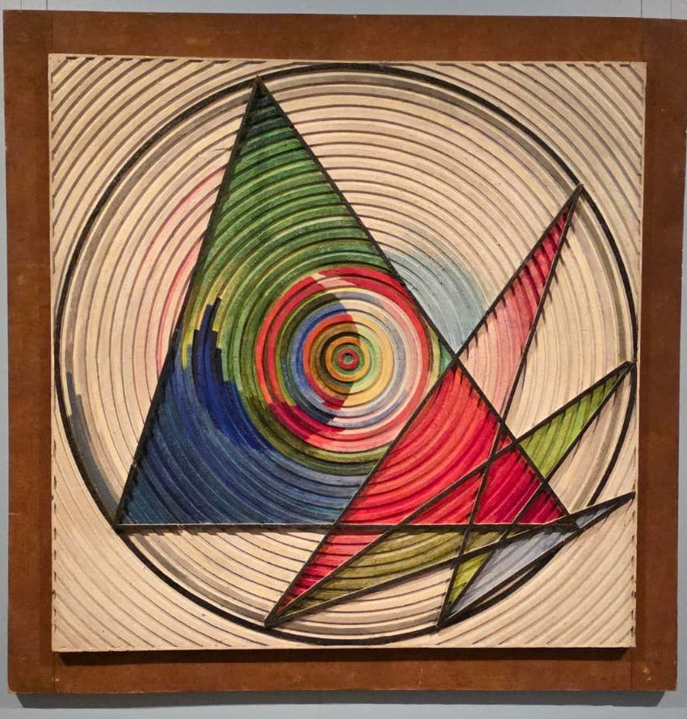
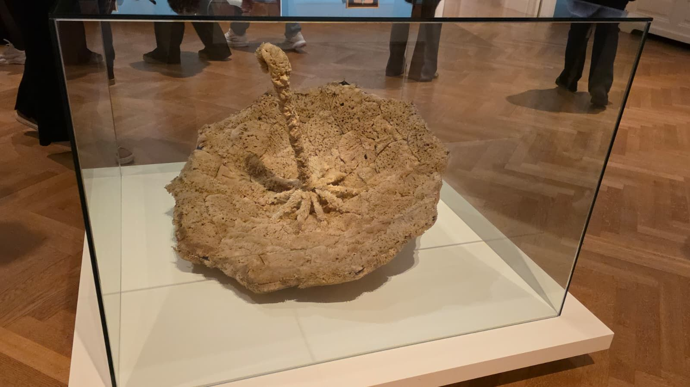

Journey 04 · Wien Note 8 of 8 Field Note
Vienna: What the Glass Takes
The top floor of the Belvedere is quieter than the second.

The art is different at the level, more recent with an emphasis on surrealism and emerging modernism rather than neoclassicism and baroque pieces. It’s also far removed from the draw of Klimt’s The Kiss, and only a fraction of the crowds from the second floor walk up to the third floor.
I think it’s the umbrella, honestly, that stops most people upon entry. In the center of the floor, it sits open in a glass case, covered in sponges. It is unlike anything on the lower floors. Confronted so immediately with this very different kind of gallery, you can watch a series of emotions and reactions from people as they enter and encounter it for the first time.

This particular piece was inspired by this delightful line from what is considered to be one of the first surrealist works, Les Chants de Maldoror: “He is as beautiful (..) as the chance encounter of a sewing machine and an umbrella on a dissecting table”.
But what I like about this era of art is the protest and symbolism woven into the work. There is much to read into, for anyone who is so inclined. And for an over-thinker like me, it was a refreshing perspective shift. The floor featured work by both dadaists and surrealists, which I found to be an interesting parallel to the historic narratives I was building while here in Europe: Surrealism features a lot of work with political undertones, and seeing largely European artists and perspectives in this context where dadaism (generally representative of anarchy) and surrealism (generally representative of communism) were both being developed in the time leading up to both World Wars and the Cold War was thought provoking. I was able to move through these galleries differently than the ones before, exercising a different part of my mental muscles with the challenging pieces, lingering in the space and in front of paintings without the pressure of crowds. And notably, with less glass between me and the artwork.
I found the balcony eventually, the physical bridge between the galleries: To my left, modernism. My right, avant-garde. And the balcony itself overlooked the wide open baroque Marble Hall of the second floor, the more classic galleries of what museum art is “supposed” to look like. Here, I sat for a long time with my journal and just thought about all I had been seeing and feeling.
I was trying to find the edges of my thoughts and feelings, taking the time to try and really be present and reflect. Even after all these weeks, it is still hard to intentionally do this kind of thing: sit quietly, without my phone or the distraction of talking to people, just the blank page of my journal that I carry everywhere, and try to put to words the feelings and ideas. Without really thinking about it, I had again done what I wrote about after watching the Lipizzaner training: I had gone to the balcony to get a different physical perspective, perhaps to inspire a new mental perspective as well.
I was thinking about how important seeing The Kiss was to me, and I thought back to a trip to Paris where I had seen both The Mona Lisa and Starry Night at two different museums. At the Louvre, seeing the most famous painting in the world was amazing. It is so small, especially compared to a room full of wall-size paintings. A (somewhat disorderly) line was queued in front of the painting, and I remember being pulled out of the line and brought to the front of the observation area. At the time, I was using a cane due to a serious leg injury, so I was allowed to see the painting much, much closer than the average tourist. While trying to be considerate of the literal hundreds of people behind me, I was able to get within inches of the painting and see it through its protective shield.
Seeing Starry Night was different. Here, there were no queues, just a temporary gallery featuring some of Van Gogh’s most famous works, the centerpiece of which was Starry Night. Here, there was no glass or crowd: just the paintings and the viewers. Being able to stand in front of the iconic painting, see the brush strokes, and watch the ways in which shadow and light moved over the painting giving it subtle movement was emotional, something that just could not be captured by a screen in the same way.
Unlike either of these paintings, encountering The Kiss was different. Still amazing and iconic, but also missing the feeling of embodiment. For the Mona Lisa, the opportunity to stand alone, without the crowd, close enough to almost breathe on the painting gave me a sense of wonder and closeness. For Starry Night, being able to encounter the painting without barrier did the same. For The Kiss, both the disorganized crowds and thick glass prevented that same feeling of encountering a painting that I have known since I was young. Instead of a feeling of finally encountering the art that was so meaningful to mean, what I was feeling that day was that I had only seen it – an observer behind a screen of glass, in the same place but still separated from the art and any meaning that may have come from seeing its dimensions.
Being able to see a painting in person, you can watch as shadows deepen and highlights brighten. You can see the brushstrokes – or lack of them – and even the most routine artworks have a depth to them, the whole surface behaving like something alive.
This is all lost when you look through glass, the glare alone prevents it. But more than just glare, the glass flattens. It compresses the surface of a painting into something closer to an image or a reproduction. A thing to be looked at rather than encountered, a living object made into a display to be glazed over in the never-ending quest for what is next.
I thought about all the photos I had taken that day, all angled to the side of paintings, never straight on, specifically taken this way to avoid the glare on the glass. I had been doing it automatically, accepting the compromised version as the best available option.
A year or so after my Paris visit, climate activists threw soup at a Van Gogh. Someone had smashed cake on the Mona Lisa several years earlier. I recall a news story about a man who punched a Picasso, and another about a man who took a hammer to La Pieta, a famous renaissance sculpture. I understand, cerebrally, why people do things like this. I even understand the frustration that drives it, and I even sometimes share the underlying concern. But nothing closes me off to empathy faster than damage to art, regardless of the cause. The loss is the loss.
And that loss is real. Because those incidents, and others like them, are exactly why the glass is there. Why it keeps expanding to cover more works, more rooms, and more of what used to be open. The protection is rational, the need for it is genuine and I don’t argue with any of that. I even recognize my own privilege in the feelings I have, and the ways in which displaying artwork has changed for good cause.
But the tears still come, even if they felt silly when compared to all the real problems of the world around me.
It is a strange feeling, to be nostalgic for something you know had good reason to change. It doesn’t make the grief smaller or more manageable, just more difficult to admit and sit with. Below me, people moved through the Marble Hall, in and out, on their way to the next thing. The museum continued being the museum. The paintings continued being the paintings. But I sat on the balcony and felt it anyway, the loss of something I had been lucky enough to experience before it changed.
We lost, I suppose.
Originally published at fieldnotesfromabroad.com/2026/04/23/vienna-what-the-glass-takes/